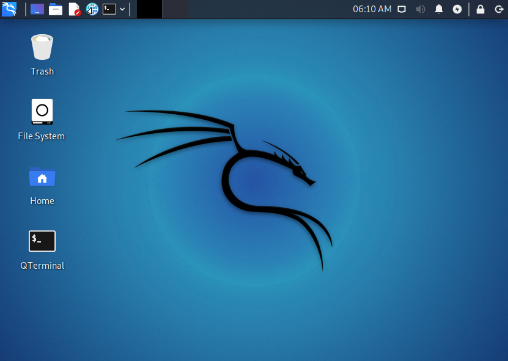
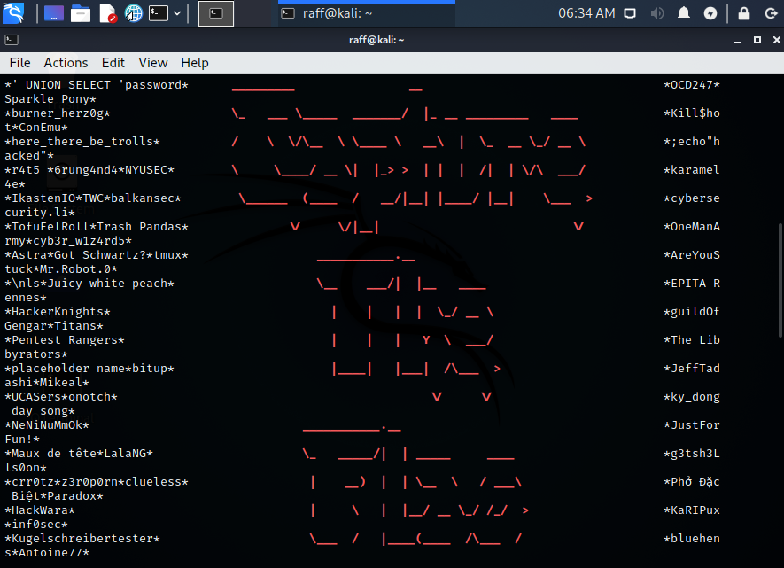

What was involved?
Throughout my time using both tryhackme and hackthebox i covered many topics in both the cyber-security and more generalised computing fields. I beleive the activities that were offered and the ones that i completed gave me a good insight into what was involved in the cyber-security scene in addition to giving me valueable experience using different tools and techniques.
Below is a summary of some topics that were covered.
Operating linux systems
- File system management
- utilising command line tools
- virtual machines
When completing tasks on both tryhackme and hackthebox, being able to access and utilize a linux system was a must. This allowed me to have the best experience as most tools used in each tasks were built with and for linux operating systems. To achieve this i used the virtualisation software "vmware workstation" to virtualise a kali linux destop system on my windows machine.
Utilization of security tools
- nmap
- burp suite
- john the ripper
- metasploit
- wireshark
Throught my time using TryHackMe i completed many CTF (Capture the Flag) challenges requiring me to use the knowledge that i had gained to gain access to a external machine/network using a variety of techniques and security tools.
Final thoughts
I beleive that completing a variety of tasks using tryhackme has given me some incredibly valueable experience that will help me in the future, especially when completing this degree course. The tasks i have completed are directly related to this degree course i am studying and i hope i can put what i have learnt to good use.
I gained a vast number of experience on tryhackme over the many hours i spent doing tasks and challenges. Eventually reaching level 9, which i beleive is a mid-tier level on this particular site.
thank you for reading!